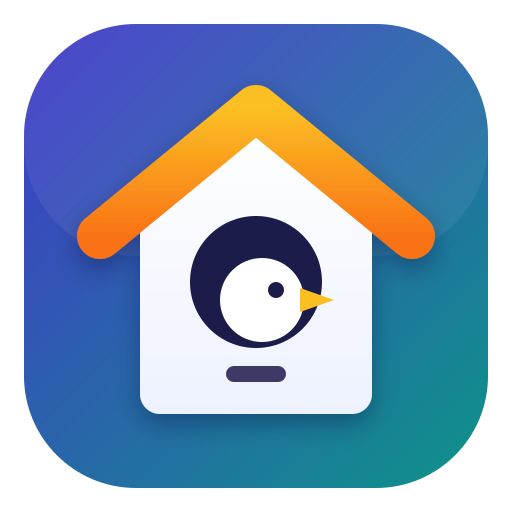

Any website, roosting in your tray
Paste the address of any web app (Outlook, Claude, your PBX…) and WebRoost turns it into a tray app.
Moving from another computer? Import an export file
Measured about once a minute by each running app. Shared memory is split fairly between the processes that use it (PSS), so the numbers add up. The graph shows the last 6 hours.
Installed as:
Your apps, logins and settings live in ~/.config/webroost and are kept when you update.
~/.config/webroost
Paste the normal site address. If the site publishes a web app manifest (most PWAs do), its name, start page and icon are used automatically. Chrome-specific “install” links aren’t needed.
webroost --app <id>
Copies of the same site get a different colour and label so you can tell their tray icons apart.
This copy gets its own login, cookies and settings (a separate profile). Open it after saving and sign in with the other account.
tel:
callto:
sip:
Pages on these origins stay inside the app and get microphone, camera, notifications and clipboard access automatically. Everything else opens in your default browser. Use https://*.example.com for subdomains.
https://*.example.com
display-capture, geolocation
For softphones such as Linkus: the headset is selected automatically and its call buttons keep working after restarts.